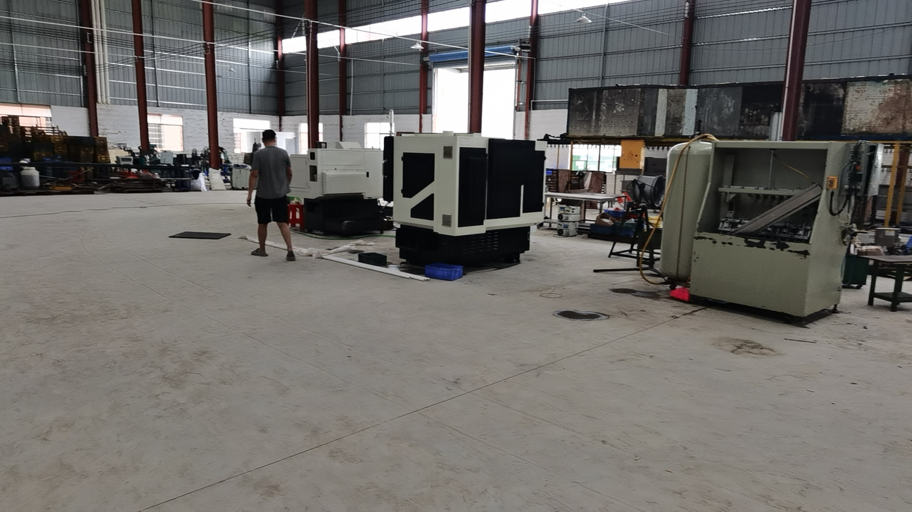

Original Taotao factory-visit image. General inspection context only; it does not identify or endorse a Canton Fair exhibitor.
The 140th Canton Fair will run in Guangzhou in three phases: October 15–19, October 23–27, and October 31–November 4, 2026, according to the official overseas-buyer guide.
The official website and app are useful starting points. Buyers can search exhibitors and products, exchange messages, arrange meetings and post sourcing requests. But a booth number is a lead source, not a supplier-approval result.
If you arrive with 40 saved companies and no evidence priorities, the fair can become a long collection of brochures. A better goal is to reduce the list to five suppliers and know exactly what must be checked next.
What a booth can prove—and what it cannot
A booth can help you assess whether the team understands your product and market, whether samples and answers are consistent, and whether the company deserves a deeper factory or quotation review.
A booth alone does not prove that the exhibitor is the entity on the quotation, that it manufactures the displayed product, that the sample matches normal production, or that a certificate covers your exact model and destination market.
The 48-hour shortlist
1. Fix the legal identity before discussing price
Ask for the supplier's full Chinese legal name and Unified Social Credit Code. Search the company in China's National Enterprise Credit Information Publicity System and compare the result with the business card, quotation and proposed payment entity.
The public system provides a registration baseline, not a financial-health verdict. Record mismatches and ask the supplier to explain the roles of any brand, trading company, manufacturer or export company involved.
2. Map the commercial parties
For each supplier, complete one line:
Booth company → quotation issuer → manufacturer → invoice seller → bank beneficiary
Different companies can have legitimate roles. The issue is whether the structure is transparent and documented.
3. Ask for one production proof, not ten marketing claims
Choose one product-specific proof that is difficult to answer with a brochure:
- a dated photo or short video of the relevant production step;
- a sample incoming-material or final-inspection record;
- an equipment list tied to the process the supplier says it performs;
- a redacted traceability or production-schedule example; or
- a test report whose model and issuing body can be checked.
4. Separate sample capability from production capability
Ask whether the displayed item is standard production, a development sample, or sourced from another factory. Confirm the material, dimensions, finish, tooling, packaging and inspection points that must remain consistent after sample approval.
5. Turn the factory visit into a decision gate
Before leaving the booth, write down three things to verify onsite:
- the process or equipment linked to your product;
- the control point most likely to create defects or delays; and
- the record connecting the approved sample to normal production.
If the supplier cannot explain where the relevant process happens, keep its manufacturing role unconfirmed.
6. Compare prices only after the scope matches
Normalise specification, material, packaging, tooling, logo method, inspection scope, Incoterm®, sample terms and lead-time basis before comparing quotations. A lower figure may describe a different configuration.
7. Give every supplier a next action
Advance
Evidence is consistent. Request a formal quotation, sample or focused factory visit.
Clarify
One or two material gaps remain. Set a document deadline and owner.
Hold
Product fit is possible, but identity, production role or evidence remains unclear.
Reject
A material contradiction, unverifiable claim or unacceptable commercial risk remains.
A banker's approach—without pretending to have private data
My earlier corporate-lending work trained me to connect documents, operating reality and transaction structure. In sourcing, I apply that discipline only to public, authorised and observable evidence.
It does not mean access to private bank information, and it does not turn a short supplier review into a formal financial opinion.
Your one-page preparation sheet
- Chinese legal name and registration code;
- booth and contact details;
- product and intended market;
- manufacturer, trader and exporter roles;
- evidence received and evidence still missing;
- three factory-visit questions; and
- next action, owner and deadline.
Official references
- 2026 Attendance Guide for Overseas Buyers of the Canton Fair
- Canton Fair official exhibitor and product search
- National Enterprise Credit Information Publicity System
- Government explanation of China's enterprise-registration database
Related buyer guides
- China Sourcing Checklist: 12 Questions Before a Purchase Order
- Supplier Verification, Factory Audit, Inspection or Lab Test?
- How to Compare Chinese Supplier Quotes Beyond the Lowest Price
- Factory Visits & Reviews